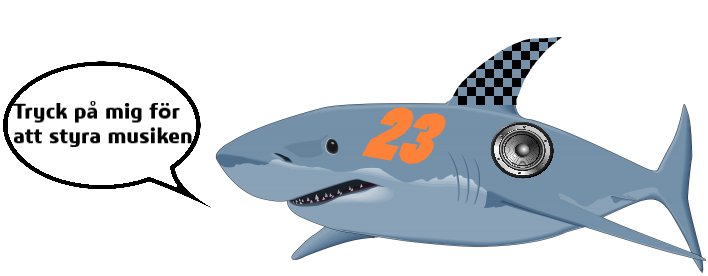

Snälla rotera skärmen för att starta kontrollern
Gyrostyrning: AV
Stream Shark
Tillbaka
Man måste först gå in på firefox via https sen kan man skriva in http för att hemsidan ska funka
Dra i spaken för hastighet
Dra i slidern för att svänga
